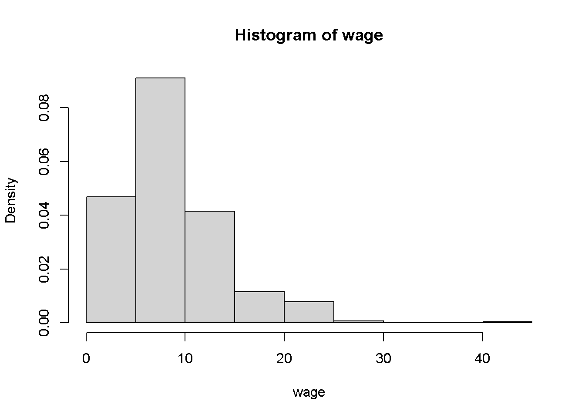
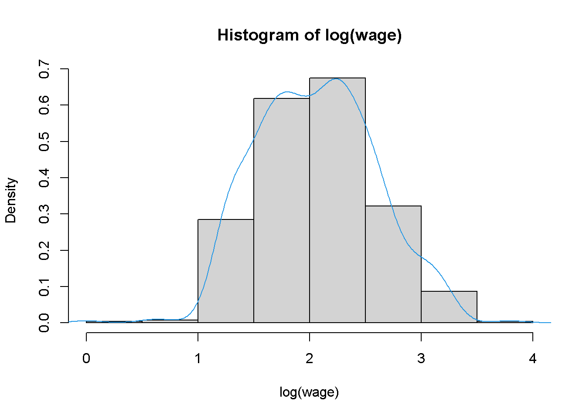
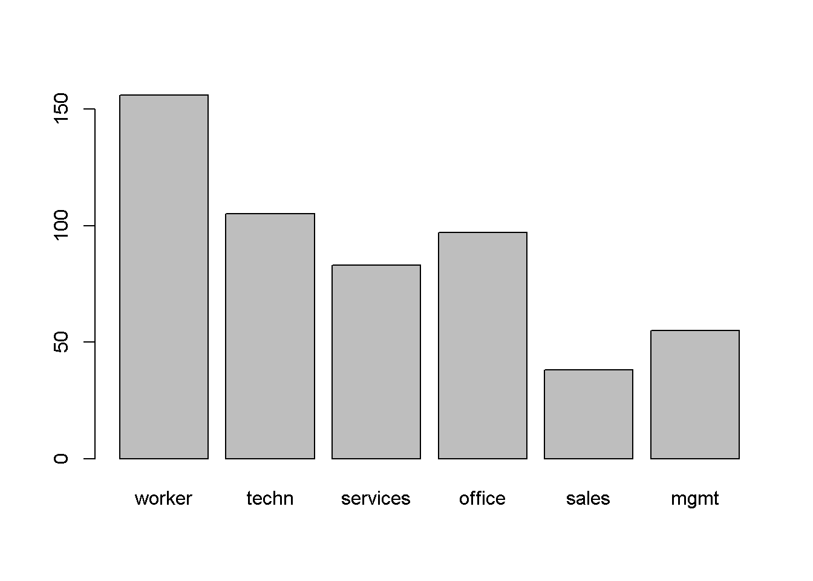
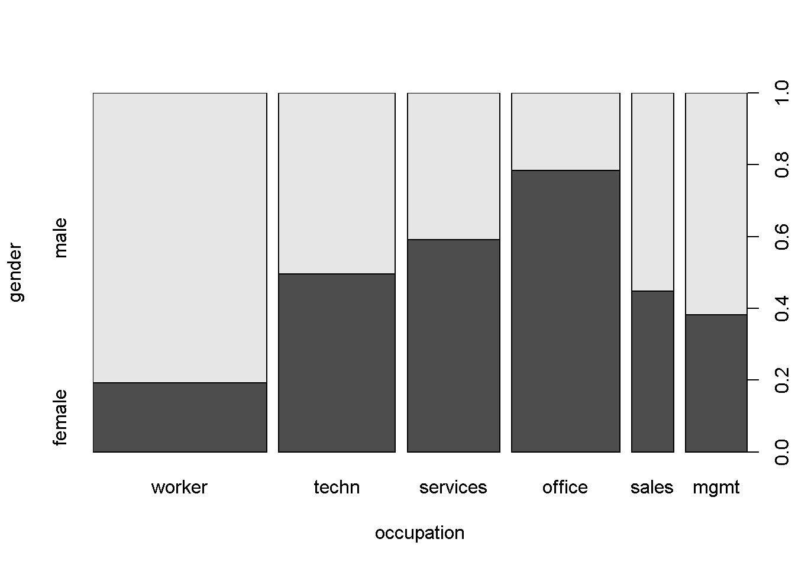
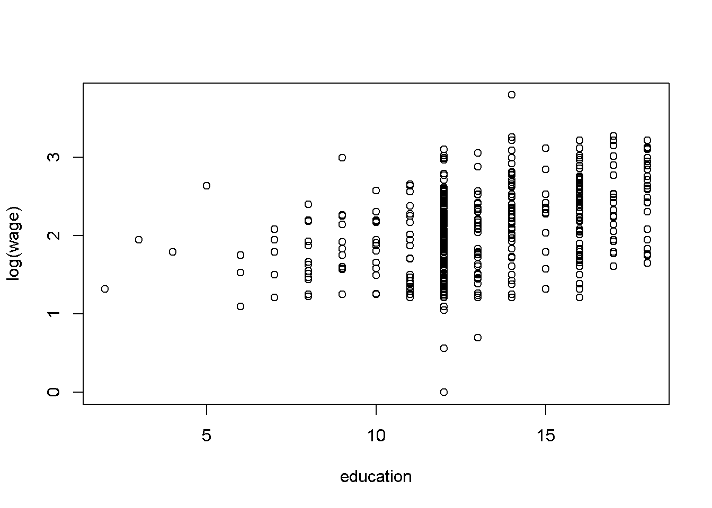
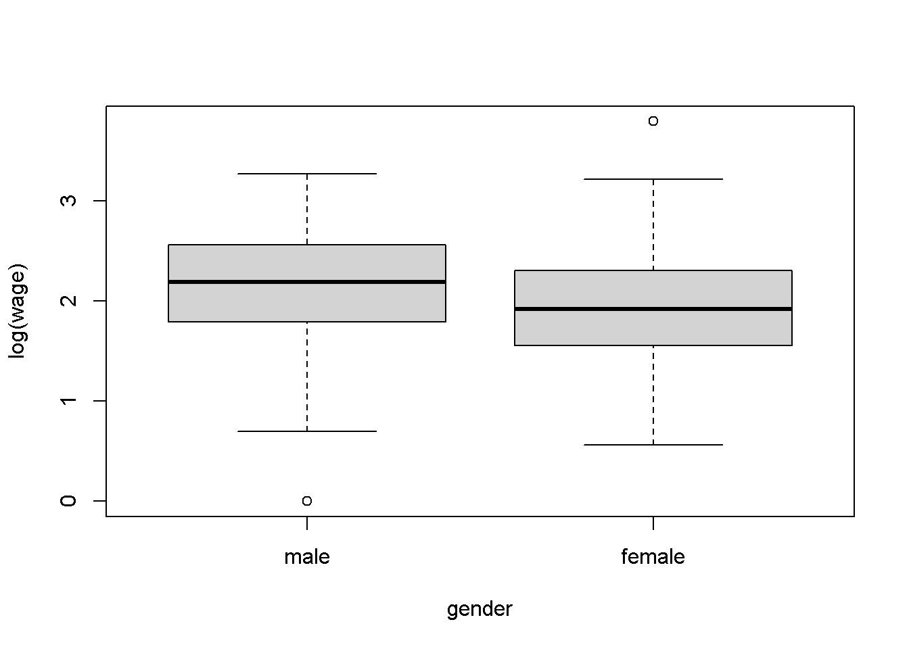
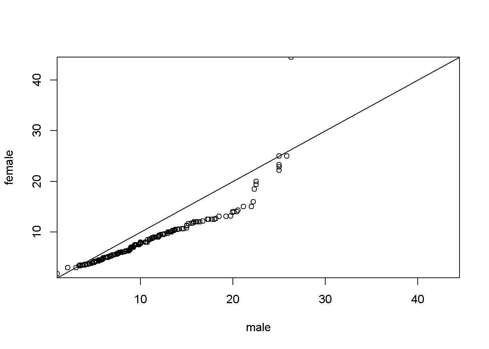

2.7 Análisis exploratorio de datos con R
En esta sección, se ilustrarán brevemente algunas técnicas estándar de análisis exploratorio de datos. Para los lectores que buscan una introducción más detallada a las estadísticas básicas utilizando R se recomienda consultar a Dalgaard (2002). Reconsiderando los datos CPS1985 tomados de Berndt (1991). Después de hacer que los datos estén disponibles a través de data(), alguna información básica puede ser consultada mediante la función estructura str():
data("CPS1985", package = "AER")
str(CPS1985)
#> 'data.frame': 534 obs. of 11 variables:
#> $ wage : num 5.1 4.95 6.67 4 7.5 ...
#> $ education : num 8 9 12 12 12 13 10 12 16 12 ...
#> $ experience: num 21 42 1 4 17 9 27 9 11 9 ...
#> $ age : num 35 57 19 22 35 28 43 27 33 27 ...
#> $ ethnicity : Factor w/ 3 levels "cauc","hispanic",..: 2 1 1 1 1 1 1 1 1 1 ...
#> $ region : Factor w/ 2 levels "south","other": 2 2 2 2 2 2 1 2 2 2 ...
#> $ gender : Factor w/ 2 levels "male","female": 2 2 1 1 1 1 1 1 1 1 ...
#> $ occupation: Factor w/ 6 levels "worker","technical",..: 1 1 1 1 1 1 1 1 1 1 ...
#> $ sector : Factor w/ 3 levels "manufacturing",..: 1 1 1 3 3 3 3 3 1 3 ...
#> $ union : Factor w/ 2 levels "no","yes": 1 1 1 1 1 2 1 1 1 1 ...
#> $ married : Factor w/ 2 levels "no","yes": 2 2 1 1 2 1 1 1 2 1 ...Esto revela que el objeto “marco de datos” (data.frame) comprende 533 observaciones sobre 11 variables, incluida la variable numérica sueldo (wage), las variables enteras experiencia (experience), educación (education) y edad (age), así como siete factores, cada uno de los cuales comprende de dos a seis niveles.
En lugar de utilizar la vista de tipo lista que proporciona str(), a menudo es útil inspeccionar la parte superior (o la parte inferior) de un marco de datos en su representación rectangular. Para ello, existen las funciones de conveniencia head() y tail(), devolviendo (por defecto) la primera y las últimas seis filas, respectivamente. Por lo tanto:
head(CPS1985)
#> wage education experience age ethnicity region gender occupation
#> 1 5.10 8 21 35 hispanic other female worker
#> 1100 4.95 9 42 57 cauc other female worker
#> 2 6.67 12 1 19 cauc other male worker
#> 3 4.00 12 4 22 cauc other male worker
#> 4 7.50 12 17 35 cauc other male worker
#> 5 13.07 13 9 28 cauc other male worker
#> sector union married
#> 1 manufacturing no yes
#> 1100 manufacturing no yes
#> 2 manufacturing no no
#> 3 other no no
#> 4 other no yes
#> 5 other yes no
tail(CPS1985)
#> wage education experience age ethnicity region gender occupation
#> 528 11.79 16 6 28 cauc other female technical
#> 529 11.36 18 5 29 cauc other male technical
#> 530 6.10 12 33 51 other other female technical
#> 531 23.25 17 25 48 other other female technical
#> 532 19.88 12 13 31 cauc south male technical
#> 533 15.38 16 33 55 cauc other male technical
#> sector union married
#> 528 other yes no
#> 529 other no no
#> 530 other no yes
#> 531 other yes yes
#> 532 other yes yes
#> 533 manufacturing no yesOtra forma útil de obtener una descripción general rápida de un conjunto de datos es utilizar el método para marcos de datos (data.frame) de la función summary(), que proporciona un resumen para cada una de las variables. Como el tipo de resumen depende de la clase de la variable respectiva, más adelante se inspeccionarán los métodos summary() por separado para varios tipos de variables en CPS1985. Por tanto, la salida de summary(CPS1985) se omite aquí.
Como los datos de CPS1985 se emplean repetidamente en lo siguiente, se evitan comandos largos como CPS1985$education adjuntando el conjunto de datos. Además, para compactar la producción posterior, se abrevian dos niveles de ocupación de “technical” a “techn” y de “management” a “mgmt.”
levels(CPS1985$occupation)[c(2, 6)] <- c("techn", "mgmt")
attach(CPS1985)Ahora se puede acceder a las variables por sus nombres. Se procede a ilustrar el análisis exploratorio de variables únicas y pares de variables, distinguiendo entre variables numéricas, factores y combinaciones de los mismos. Comenzamos con el tipo más simple, una sola variable numérica.
Una variable numérica
Primero se vera la distribución de salarios en la muestra:
summary(wage)
#> Min. 1st Qu. Median Mean 3rd Qu. Max.
#> 1.000 5.250 7.780 9.024 11.250 44.500Esto proporciona el resumen de los cinco números de Tukey más el salario medio. La media y la mediana también se podrían haber obtenido utilizando:
mean(wage)
#> [1] 9.024064
median(wage)
#> [1] 7.78Asimismo, fivenum() calcula el resumen de cinco números. Similarmente, min() y max() habrían dado el mínimo y el máximo. Las cantidades arbitrarias se pueden calcular mediante la función quantile().
Para las medidas de propagación o disperción, existen las funciones:
var(wage)
#> [1] 26.41032
sd(wage)
#> [1] 5.139097Las funciones devuelven la varianza y la desviación estándar, respectivamente.
Los resúmenes gráficos también son útiles. Para variables numéricas como wage, las visualizaciones de densidad (a través de histogramas o suavizado de kernel) y los diagramas de caja son adecuados. Los diagramas de caja se considerarán a continuación en relación con los paneles de dos variables obtenidas a través de:
# histogramas de salarios
hist(wage, freq = FALSE)
# logaritmos con densidad superpuesta
hist(log(wage), freq = FALSE)
lines(density(log(wage)), col = 4)
El código anterior muestra las densidades de sueldo y su logaritmo (es decir, áreas bajo curvas iguales a \(1\), resultante de freq = FALSE; de lo contrario, se habrían representado frecuencias absolutas). Otros argumentos permiten un ajuste fino de la selección de las rupturas en el histograma. Por ejemplo, en el histograma del panel derecho se agregó una estimación de la densidad del kernel obtenida usando density(). Claramente, la distribución de los logaritmos está menos sesgada que la de los datos brutos. Se debe tener en cuenta que density() solo calcula las coordenadas de densidad y no proporciona una gráfica; por lo tanto, la estimación se agrega a través de lines()
Una variable categórica
Para datos categóricos, no tiene sentido calcular medias y varianzas; en su lugar, se necesita una tabla que indique las frecuencias con las que ocurren las categorías. Si R dice que una determinada variable es categórica (al convertirla en un “factor”), elige automáticamente un resumen apropiado:
summary(occupation)
#> worker techn services office sales mgmt
#> 156 105 83 97 38 55Esto también podría haber sido calculado por table(occupation). Si se desean frecuencias relativas (porcentajes) en lugar de absolutas (números), existe la función prop.table():
tab <- table(occupation)
prop.table(tab)
#> occupation
#> worker techn services office sales mgmt
#> 0.29213483 0.19662921 0.15543071 0.18164794 0.07116105 0.10299625Las variables categóricas generalmente se visualizan mejor mediante gráficos de barras. Si se van a destacar las mayorías, los gráficos circulares también pueden ser útiles. Por lo tanto:
# gráfico de barras de ocupación
barplot(tab)
# gráfico circular de ocupación
pie(tab)
El código anterior proporciona el gráfico de barras y gráfico circular de occupation. Se debe tener en cuenta que ambas funciones esperan las frecuencias tabuladas como entrada. Además, llamando occupation es equivalente a barplot(table(occupation)), dado que es una variable categórica.
Dos variables categóricas
La relación entre dos variables categóricas generalmente se resume en una tabla de contingencia. Esto puede ser creado por xtabs(), una función con una interfaz de fórmula, o por table(), una función que toma un número arbitrario de variables para la tabulación cruzada (y no solo una como se muestra arriba).
Se consideran los factores ocupación (occupation) y género (gender) para ilustrar el punto anterior:
xtabs(~ gender + occupation, data = CPS1985)
#> occupation
#> gender worker techn services office sales mgmt
#> male 126 53 34 21 21 34
#> female 30 52 49 76 17 21La tabla anterior puede ser creada de forma equivalente por table(gender, occupation). Una visualización simple es un diagrama de mosaico (Hartigan y Kleiner 1981; Friendly 1994), que puede verse como una generalización de diagramas de barras apilados. El gráfico que se muestra a continuación (también conocido como “gráfico de columna vertebral,” es una variante de la pantalla de mosaico estándar), obtenido a través de:
# gráfico de mosaico (gráfico de columna vertebral) de género versus ocupación.
plot(gender ~ occupation, data = CPS1985)
El gráfico muestra que la proporción de hombres y mujeres cambia considerablemente a lo largo de los niveles de ocupación. Además del sombreado que resalta la distribución condicional de género dada la ocupación, los anchos de las barras visualizan la distribución marginal de ocupación, lo que indica que hay comparativamente muchos trabajadores y pocos vendedores.
Dos variables numéricas
Se ejemplifica el análisis exploratorio de la relación entre dos variables numéricas utilizando sueldo (wage) y educación (education). Una medida de resumen para dos variables numéricas es el coeficiente de correlación, implementado mediante la función cor(). Sin embargo, el coeficiente de correlación estándar (Pearson) no es necesariamente significativo para variables positivas y muy sesgadas como sueldo (wage). Por lo tanto, también se calcula una variante no paramétrica, la correlación de Spearman, que está disponible en cor() como una opción mediante los métodos:
cor(log(wage), education)
#> [1] 0.3803983
cor(log(wage), education, method = "spearman")
#> [1] 0.3813425Ambas medidas son virtualmente idénticas e indican solo una pequeña cantidad de correlación aquí, vea también el diagrama de dispersión correspondiente:
# diagrama de dispersión de salarios (en logaritmos) versus educación
plot(log(wage) ~ education)
Una variable numérica y una categórica
Es común tener variables tanto numéricas como categóricas en un marco de datos. Por ejemplo, aquí se tiene sueldo (wage) y género (gender), y puede haber cierto interés en la distribución de sueldo por género. Una función adecuada para resúmenes numéricos es tapply(). Se aplica, para una variable numérica como su primer argumento y una (lista de) variable(s) categórica(s) como su segundo argumento, la función especificada como el tercer argumento. Por lo tanto, los salarios medios condicionados al género están disponibles utilizando:
tapply(log(wage), gender, mean)
#> male female
#> 2.165286 1.934037Usando comandos similares, se pueden obtener medidas descriptivas o incluso resúmenes completos (simplemente reemplace mean por summary) se pueden calcular.
Las presentaciones gráficas adecuadas son diagramas de caja paralelos y diagramas de cuantiles-cuantiles (QQ), se muestran a continuación. Recuerde que una gráfica de caja (o “gráfica de caja y bigotes”) es un resumen gráfico burdo de una distribución empírica. El cuadro indica “bisagras” (aproximadamente los cuartiles superior e inferior) y la mediana.
Los “bigotes” (líneas) indican las observaciones más grandes y más pequeñas que se encuentran a una distancia de \(1.5\) veces el tamaño de la caja desde la bisagra más cercana (\(1.5\) desviaciones estandar). Cualquier observación que caiga fuera de este rango se muestra por separado y puede ser considerada extrema o atípica (en una muestra aproximadamente normal). Se debe tener en cuenta que existen varias variantes de diagramas de caja en la literatura.
Los comandos plot(y ~ x) y boxplot(y ~ x) producen la misma gráfica paralela de boxplot si X es un “factor”; por lo tanto:
# diagrama de caja de salarios estratificados por género.
plot(log(wage) ~ gender)
El gráfico muestra que las formas generales de ambas distribuciones son bastante similares y que los hombres disfrutan de una ventaja sustancial, especialmente en el rango medio. La última característica también se destaca por el gráfico QQ resultante de:
# diagrama QQ de salarios estratificados por género
mwage <- subset(CPS1985, gender == "male")$wage
fwage <- subset(CPS1985, gender == "female")$wage
qqplot(mwage,
fwage,
xlim = range(wage),
ylim = range(wage),
xaxs = "i",
yaxs = "i",
xlab = "male",
ylab = "female")
abline(0, 1)
En el gráfico casi todos los puntos están por debajo de la diagonal (correspondientes a distribuciones idénticas en ambas muestras). Esto indica que, para la mayoría de los cuantiles, los salarios de los hombres suelen ser más altos que los de las mujeres.
Se termina esta sección separando los datos:
detach(CPS1985)Ejercicios
Cree una matriz cuadrada, digamos \(A\), con entradas \(a_{ii} = 2\), \(i = 2\), \(. . .\) , \(n - 1\), \(a_{11} = a_{nn} = 1\), \(a_{i,i+1} = a_{i,i-1} = 1\) y \(a_{ij} = 0\). (¿Dónde ocurre esta matriz en econometría?)
“PARADE” es la revista dominical que complementa la edición de los domingos o fines de semana de unos \(500\) diarios de los Estados Unidos de América (se encuentra en el paquete AER). Una característica anual importante es un artículo que proporciona información sobre unos \(120\)-\(150\) ciudadanos estadounidenses seleccionados “al azar,” indicando su profesión, ciudad natal y estado, así como sus ingresos anuales. El conjunto de datos Parade2005 contienen la versión de 2005, modificada por una variable que indica el estatus de celebridad (motivada por un sobremuestreo sustancial de celebridades en estos datos). Para el conjunto de datos Parade2005:
- Determine las ganancias medias en California. Explique el resultado.
- Determine el número de personas que residen en Idaho (¿Qué dice esto sobre el conjunto de datos?).
- Determine la media y la mediana de los ingresos de las celebridades. Explique el resultado.
- Obtenga un diagrama de caja de log(earnings) estratificado por celebrity. Explique el resultado.
Para el conjunto de datos Parade2005 del ejercicio anterior, obtenga una densidad estimada de kernel de las ganancias para el conjunto de datos completo. Será necesario transformar los datos a logaritmos (¿por qué?). Comente el resultado. Asegúrese de probar algunos argumentos para density(), en particular, el complemento ancho de banda (bw).
Considere el conjunto de datos CPS1988, tomados de Bierens y Ginther (2001) (estos datos se utilizarán para estimar una ecuación de ganancias en próximos capítulos).
- Obtenga diagramas de dispersión del logaritmo del salario real (wage) versus experiencia (experience) y versus educación (education).
- De hecho, education corresponde a años de escolaridad y, por ende, toma solo un número limitado de valores. Transformar educación en un factor y obtener diagramas de caja paralelos de la variable wage estratificada por los niveles de education. Repetir para experience.
- El conjunto de datos contiene cuatro factores adicionales: ethnicity, smsa, region y parttime. Obtenga visualizaciones gráficas adecuadas de log(wage) versus cada uno de estos factores.